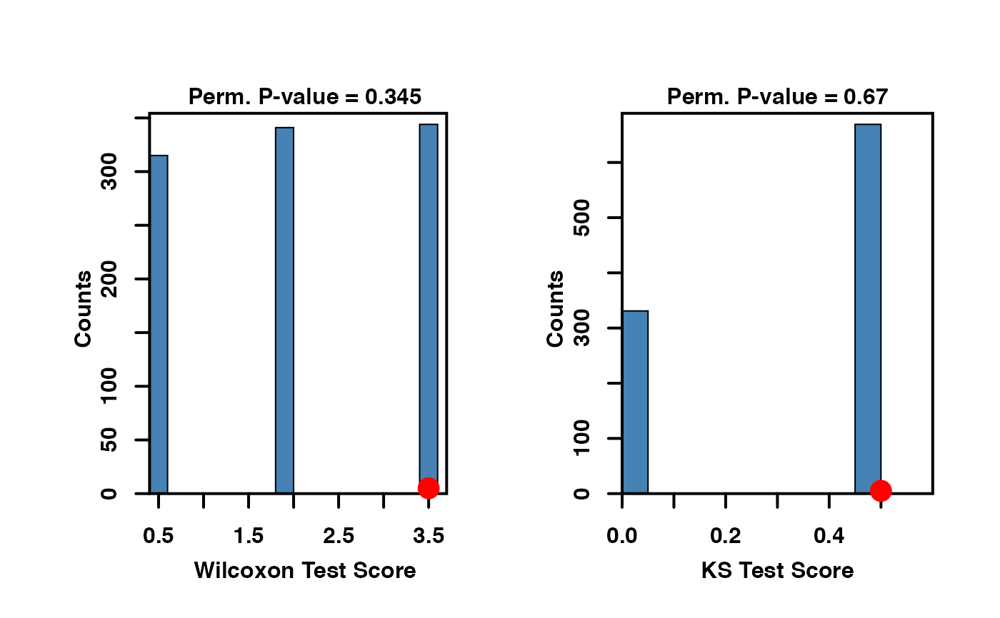

condor.core.enrich.RdCompute one-sided KS and wilcox tests to determine if a subset of nodes has a stochastically larger qscore distribution.
condor.core.enrich( test_nodes, q, perm = FALSE, plot.hist = FALSE, nsamp = 1000 )
| test_nodes | is a list containing the subset of nodes (of one node class --blue or red--only) to be tested |
|---|---|
| q | is a two column data frame containing the node names in the first column and the q-scores in the second column. |
| perm | if TRUE, run permutation tests. Else, run
|
| plot.hist | if TRUE, produces two histograms of test statistics from permutation tests, one for KS and one for wilcoxon and a red dot for true labeling. Only works if perm=TRUE. |
| nsamp | Number of permutation tests to run |
if perm=FALSE, the analytical p-values from
ks.test and wilcox.test
if perm=TRUE, the permutation p-values are provided in
addition to the analytical values.
ks.test and wilcox.test
will throw warnings due to the presence of ties, so the p-values will be
approximate. See those functions for further details.
r = c(1,1,1,2,2,2,3,3,3,4,4); b = c(1,2,3,1,2,4,2,3,4,3,4); reds <- c("Alice","Sue","Janine","Mary") blues <- c("Bob","John","Ed","Hank") elist <- data.frame(red=reds[r],blue=blues[b]) condor.object <- create.condor.object(elist) condor.object <- condor.cluster(condor.object)#> [1] "modularity of projected graph 0" #> [1] "Q = 0" #> [1] "Q = 0.15702479338843" #> [1] "Q = 0.231404958677686" #> [1] "Q = 0.231404958677686"condor.object <- condor.qscore(condor.object) q_in <- condor.object$qscores$red.qscore out <- condor.core.enrich(c("Alice","Mary"),q=q_in,perm=TRUE,plot.hist=TRUE)#> Warning: p-value will be approximate in the presence of ties#> Warning: p-value will be approximate in the presence of ties#> Warning: p-value will be approximate in the presence of ties#> Warning: p-value will be approximate in the presence of ties#> Warning: p-value will be approximate in the presence of ties#> Warning: p-value will be approximate in the presence of ties#> Warning: p-value will be approximate in the presence of ties#> Warning: p-value will be approximate in the presence of ties#> Warning: p-value will be approximate in the presence of ties#> Warning: p-value will be approximate in the presence of ties#> Warning: p-value will be approximate in the presence of ties#> Warning: p-value will be approximate in the presence of ties#> Warning: p-value will be approximate in the presence of ties#> Warning: p-value will be approximate in the presence of ties#> Warning: p-value will be approximate in the presence of ties#> Warning: p-value will be approximate in the presence of ties#> Warning: p-value will be approximate in the presence of ties#> Warning: p-value will be approximate in the presence of ties#> Warning: p-value will be approximate in the presence of ties#> Warning: p-value will be approximate in the presence of ties#> Warning: p-value will be approximate in the presence of ties#> Warning: p-value will be approximate in the presence of ties#> Warning: p-value will be approximate in the presence of ties#> Warning: p-value will be approximate in the presence of ties#> Warning: p-value will be approximate in the presence of ties#> Warning: p-value will be approximate in the presence of ties#> Warning: p-value will be approximate in the presence of ties#> Warning: p-value will be approximate in the presence of ties#> Warning: p-value will be approximate in the presence of ties#> Warning: p-value will be approximate in the presence of ties#> Warning: p-value will be approximate in the presence of ties#> Warning: p-value will be approximate in the presence of ties#> Warning: p-value will be approximate in the presence of ties#> Warning: p-value will be approximate in the presence of ties#> Warning: p-value will be approximate in the presence of ties#> Warning: p-value will be approximate in the presence of ties#> Warning: p-value will be approximate in the presence of ties#> Warning: p-value will be approximate in the presence of ties#> Warning: p-value will be approximate in the presence of ties#> Warning: p-value will be approximate in the presence of ties#> Warning: p-value will be approximate in the presence of ties#> Warning: p-value will be approximate in the presence of ties#> Warning: p-value will be approximate in the presence of ties#> Warning: p-value will be approximate in the presence of ties#> Warning: p-value will be approximate in the presence of ties#> Warning: p-value will be approximate in the presence of ties#> Warning: p-value will be approximate in the presence of ties#> Warning: p-value will be approximate in the presence of ties#> Warning: p-value will be approximate in the presence of ties#> Warning: p-value will be approximate in the presence of ties#> Warning: p-value will be approximate in the presence of ties#> Warning: p-value will be approximate in the presence of ties#> Warning: p-value will be approximate in the presence of ties#> Warning: p-value will be approximate in the presence of ties#> Warning: p-value will be approximate in the presence of ties#> Warning: p-value will be approximate in the presence of ties#> Warning: p-value will be approximate in the presence of ties#> Warning: p-value will be approximate in the presence of ties#> Warning: p-value will be approximate in the presence of ties#> Warning: p-value will be approximate in the presence of ties#> Warning: p-value will be approximate in the presence of ties#> Warning: p-value will be approximate in the presence of ties#> Warning: p-value will be approximate in the presence of ties#> Warning: p-value will be approximate in the presence of ties#> Warning: p-value will be approximate in the presence of ties#> Warning: p-value will be approximate in the presence of ties#> Warning: p-value will be approximate in the presence of ties#> Warning: p-value will be approximate in the presence of ties#> Warning: p-value will be approximate in the presence of ties#> Warning: p-value will be approximate in the presence of ties#> Warning: p-value will be approximate in the presence of ties#> Warning: p-value will be approximate in the presence of ties#> Warning: p-value will be approximate in the presence of ties#> Warning: p-value will be approximate in the presence of ties#> Warning: p-value will be approximate in the presence of ties#> Warning: p-value will be approximate in the presence of ties#> Warning: p-value will be approximate in the presence of ties#> Warning: p-value will be approximate in the presence of ties#> Warning: p-value will be approximate in the presence of ties#> Warning: p-value will be approximate in the presence of ties#> Warning: p-value will be approximate in the presence of ties#> Warning: p-value will be approximate in the presence of ties#> Warning: p-value will be approximate in the presence of ties#> Warning: p-value will be approximate in the presence of ties#> Warning: p-value will be approximate in the presence of ties#> Warning: p-value will be approximate in the presence of ties#> Warning: p-value will be approximate in the presence of ties#> Warning: p-value will be approximate in the presence of ties#> Warning: p-value will be approximate in the presence of ties#> Warning: p-value will be approximate in the presence of ties#> Warning: p-value will be approximate in the presence of ties#> Warning: p-value will be approximate in the presence of ties#> Warning: p-value will be approximate in the presence of ties#> Warning: p-value will be approximate in the presence of ties#> Warning: p-value will be approximate in the presence of ties#> Warning: p-value will be approximate in the presence of ties#> Warning: p-value will be approximate in the presence of ties#> Warning: p-value will be approximate in the presence of ties#> Warning: p-value will be approximate in the presence of ties#> Warning: p-value will be approximate in the presence of ties#> Warning: p-value will be approximate in the presence of ties#> Warning: p-value will be approximate in the presence of ties#> Warning: p-value will be approximate in the presence of ties#> Warning: p-value will be approximate in the presence of ties#> Warning: p-value will be approximate in the presence of ties#> Warning: p-value will be approximate in the presence of ties#> Warning: p-value will be approximate in the presence of ties#> Warning: p-value will be approximate in the presence of ties#> Warning: p-value will be approximate in the presence of ties#> Warning: p-value will be approximate in the presence of ties#> Warning: p-value will be approximate in the presence of ties#> Warning: p-value will be approximate in the presence of ties#> Warning: p-value will be approximate in the presence of ties#> Warning: p-value will be approximate in the presence of ties#> Warning: p-value will be approximate in the presence of ties#> Warning: p-value will be approximate in the presence of ties#> Warning: p-value will be approximate in the presence of ties#> Warning: p-value will be approximate in the presence of ties#> Warning: p-value will be approximate in the presence of ties#> Warning: p-value will be approximate in the presence of ties#> Warning: p-value will be approximate in the presence of ties#> Warning: p-value will be approximate in the presence of ties#> Warning: p-value will be approximate in the presence of ties#> Warning: p-value will be approximate in the presence of ties#> Warning: p-value will be approximate in the presence of ties#> Warning: p-value will be approximate in the presence of ties#> Warning: p-value will be approximate in the presence of ties#> Warning: p-value will be approximate in the presence of ties#> Warning: p-value will be approximate in the presence of ties#> Warning: p-value will be approximate in the presence of ties#> Warning: p-value will be approximate in the presence of ties#> Warning: p-value will be approximate in the presence of ties#> Warning: p-value will be approximate in the presence of ties#> Warning: p-value will be approximate in the presence of ties#> Warning: p-value will be approximate in the presence of ties#> Warning: p-value will be approximate in the presence of ties#> Warning: p-value will be approximate in the presence of ties#> Warning: p-value will be approximate in the presence of ties#> Warning: p-value will be approximate in the presence of ties#> Warning: p-value will be approximate in the presence of ties#> Warning: p-value will be approximate in the presence of ties#> Warning: p-value will be approximate in the presence of ties#> Warning: p-value will be approximate in the presence of ties#> Warning: p-value will be approximate in the presence of ties#> Warning: p-value will be approximate in the presence of ties#> Warning: p-value will be approximate in the presence of ties#> Warning: p-value will be approximate in the presence of ties#> Warning: p-value will be approximate in the presence of ties#> Warning: p-value will be approximate in the presence of ties#> Warning: p-value will be approximate in the presence of ties#> Warning: p-value will be approximate in the presence of ties#> Warning: p-value will be approximate in the presence of ties#> Warning: p-value will be approximate in the presence of ties#> Warning: p-value will be approximate in the presence of ties#> Warning: p-value will be approximate in the presence of ties#> Warning: p-value will be approximate in the presence of ties#> Warning: p-value will be approximate in the presence of ties#> Warning: p-value will be approximate in the presence of ties#> Warning: p-value will be approximate in the presence of ties#> Warning: p-value will be approximate in the presence of ties#> Warning: p-value will be approximate in the presence of ties#> Warning: p-value will be approximate in the presence of ties#> Warning: p-value will be approximate in the presence of ties#> Warning: p-value will be approximate in the presence of ties#> Warning: p-value will be approximate in the presence of ties#> Warning: p-value will be approximate in the presence of ties#> Warning: p-value will be approximate in the presence of ties#> Warning: p-value will be approximate in the presence of ties#> Warning: p-value will be approximate in the presence of ties#> Warning: p-value will be approximate in the presence of ties#> Warning: p-value will be approximate in the presence of ties#> Warning: p-value will be approximate in the presence of ties#> Warning: p-value will be approximate in the presence of ties#> Warning: p-value will be approximate in the presence of ties#> Warning: p-value will be approximate in the presence of ties#> Warning: p-value will be approximate in the presence of ties#> Warning: p-value will be approximate in the presence of ties#> Warning: p-value will be approximate in the presence of ties#> Warning: p-value will be approximate in the presence of ties#> Warning: p-value will be approximate in the presence of ties#> Warning: p-value will be approximate in the presence of ties#> Warning: p-value will be approximate in the presence of ties#> Warning: p-value will be approximate in the presence of ties#> Warning: p-value will be approximate in the presence of ties#> Warning: p-value will be approximate in the presence of ties#> Warning: p-value will be approximate in the presence of ties#> Warning: p-value will be approximate in the presence of ties#> Warning: p-value will be approximate in the presence of ties#> Warning: p-value will be approximate in the presence of ties#> Warning: p-value will be approximate in the presence of ties#> Warning: p-value will be approximate in the presence of ties#> Warning: p-value will be approximate in the presence of ties#> Warning: p-value will be approximate in the presence of ties#> Warning: p-value will be approximate in the presence of ties#> Warning: p-value will be approximate in the presence of ties#> Warning: p-value will be approximate in the presence of ties#> Warning: p-value will be approximate in the presence of ties#> Warning: p-value will be approximate in the presence of ties#> Warning: p-value will be approximate in the presence of ties#> Warning: p-value will be approximate in the presence of ties#> Warning: p-value will be approximate in the presence of ties#> Warning: p-value will be approximate in the presence of ties#> Warning: p-value will be approximate in the presence of ties#> Warning: p-value will be approximate in the presence of ties#> Warning: p-value will be approximate in the presence of ties#> Warning: p-value will be approximate in the presence of ties#> Warning: p-value will be approximate in the presence of ties#> Warning: p-value will be approximate in the presence of ties#> Warning: p-value will be approximate in the presence of ties#> Warning: p-value will be approximate in the presence of ties#> Warning: p-value will be approximate in the presence of ties#> Warning: p-value will be approximate in the presence of ties#> Warning: p-value will be approximate in the presence of ties#> Warning: p-value will be approximate in the presence of ties#> Warning: p-value will be approximate in the presence of ties#> Warning: p-value will be approximate in the presence of ties#> Warning: p-value will be approximate in the presence of ties#> Warning: p-value will be approximate in the presence of ties#> Warning: p-value will be approximate in the presence of ties#> Warning: p-value will be approximate in the presence of ties#> Warning: p-value will be approximate in the presence of ties#> Warning: p-value will be approximate in the presence of ties#> Warning: p-value will be approximate in the presence of ties#> Warning: p-value will be approximate in the presence of ties#> Warning: p-value will be approximate in the presence of ties#> Warning: p-value will be approximate in the presence of ties#> Warning: p-value will be approximate in the presence of ties#> Warning: p-value will be approximate in the presence of ties#> Warning: p-value will be approximate in the presence of ties#> Warning: p-value will be approximate in the presence of ties#> Warning: p-value will be approximate in the presence of ties#> Warning: p-value will be approximate in the presence of ties#> Warning: p-value will be approximate in the presence of ties#> Warning: p-value will be approximate in the presence of ties#> Warning: p-value will be approximate in the presence of ties#> Warning: p-value will be approximate in the presence of ties#> Warning: p-value will be approximate in the presence of ties#> Warning: p-value will be approximate in the presence of ties#> Warning: p-value will be approximate in the presence of ties#> Warning: p-value will be approximate in the presence of ties#> Warning: p-value will be approximate in the presence of ties#> Warning: p-value will be approximate in the presence of ties#> Warning: p-value will be approximate in the presence of ties#> Warning: p-value will be approximate in the presence of ties#> Warning: p-value will be approximate in the presence of ties#> Warning: p-value will be approximate in the presence of ties#> Warning: p-value will be approximate in the presence of ties#> Warning: p-value will be approximate in the presence of ties#> Warning: p-value will be approximate in the presence of ties#> Warning: p-value will be approximate in the presence of ties#> Warning: p-value will be approximate in the presence of ties#> Warning: p-value will be approximate in the presence of ties#> Warning: p-value will be approximate in the presence of ties#> Warning: p-value will be approximate in the presence of ties#> Warning: p-value will be approximate in the presence of ties#> Warning: p-value will be approximate in the presence of ties#> Warning: p-value will be approximate in the presence of ties#> Warning: p-value will be approximate in the presence of ties#> Warning: p-value will be approximate in the presence of ties#> Warning: p-value will be approximate in the presence of ties#> Warning: p-value will be approximate in the presence of ties#> Warning: p-value will be approximate in the presence of ties#> Warning: p-value will be approximate in the presence of ties#> Warning: p-value will be approximate in the presence of ties#> Warning: p-value will be approximate in the presence of ties#> Warning: p-value will be approximate in the presence of ties#> Warning: p-value will be approximate in the presence of ties#> Warning: p-value will be approximate in the presence of ties#> Warning: p-value will be approximate in the presence of ties#> Warning: p-value will be approximate in the presence of ties#> Warning: p-value will be approximate in the presence of ties#> Warning: p-value will be approximate in the presence of ties#> Warning: p-value will be approximate in the presence of ties#> Warning: p-value will be approximate in the presence of ties#> Warning: p-value will be approximate in the presence of ties#> Warning: p-value will be approximate in the presence of ties#> Warning: p-value will be approximate in the presence of ties#> Warning: p-value will be approximate in the presence of ties#> Warning: p-value will be approximate in the presence of ties#> Warning: p-value will be approximate in the presence of ties#> Warning: p-value will be approximate in the presence of ties#> Warning: p-value will be approximate in the presence of ties#> Warning: p-value will be approximate in the presence of ties#> Warning: p-value will be approximate in the presence of ties#> Warning: p-value will be approximate in the presence of ties#> Warning: p-value will be approximate in the presence of ties#> Warning: p-value will be approximate in the presence of ties#> Warning: p-value will be approximate in the presence of ties#> Warning: p-value will be approximate in the presence of ties#> Warning: p-value will be approximate in the presence of ties#> Warning: p-value will be approximate in the presence of ties#> Warning: p-value will be approximate in the presence of ties#> Warning: p-value will be approximate in the presence of ties#> Warning: p-value will be approximate in the presence of ties#> Warning: p-value will be approximate in the presence of ties#> Warning: p-value will be approximate in the presence of ties#> Warning: p-value will be approximate in the presence of ties#> Warning: p-value will be approximate in the presence of ties#> Warning: p-value will be approximate in the presence of ties#> Warning: p-value will be approximate in the presence of ties#> Warning: p-value will be approximate in the presence of ties#> Warning: p-value will be approximate in the presence of ties#> Warning: p-value will be approximate in the presence of ties#> Warning: p-value will be approximate in the presence of ties#> Warning: p-value will be approximate in the presence of ties#> Warning: p-value will be approximate in the presence of ties#> Warning: p-value will be approximate in the presence of ties#> Warning: p-value will be approximate in the presence of ties#> Warning: p-value will be approximate in the presence of ties#> Warning: p-value will be approximate in the presence of ties#> Warning: p-value will be approximate in the presence of ties#> Warning: p-value will be approximate in the presence of ties#> Warning: p-value will be approximate in the presence of ties#> Warning: p-value will be approximate in the presence of ties#> Warning: p-value will be approximate in the presence of ties#> Warning: p-value will be approximate in the presence of ties#> Warning: p-value will be approximate in the presence of ties#> Warning: p-value will be approximate in the presence of ties#> Warning: p-value will be approximate in the presence of ties#> Warning: p-value will be approximate in the presence of ties#> Warning: p-value will be approximate in the presence of ties#> Warning: p-value will be approximate in the presence of ties#> Warning: p-value will be approximate in the presence of ties#> Warning: p-value will be approximate in the presence of ties#> Warning: p-value will be approximate in the presence of ties#> Warning: p-value will be approximate in the presence of ties#> Warning: p-value will be approximate in the presence of ties#> Warning: p-value will be approximate in the presence of ties#> Warning: p-value will be approximate in the presence of ties#> Warning: p-value will be approximate in the presence of ties#> Warning: p-value will be approximate in the presence of ties#> Warning: p-value will be approximate in the presence of ties#> Warning: p-value will be approximate in the presence of ties#> Warning: p-value will be approximate in the presence of ties#> Warning: p-value will be approximate in the presence of ties#> Warning: p-value will be approximate in the presence of ties#> Warning: p-value will be approximate in the presence of ties#> Warning: p-value will be approximate in the presence of ties#> Warning: p-value will be approximate in the presence of ties#> Warning: p-value will be approximate in the presence of ties#> Warning: p-value will be approximate in the presence of ties#> Warning: p-value will be approximate in the presence of ties#> Warning: p-value will be approximate in the presence of ties#> Warning: p-value will be approximate in the presence of ties#> Warning: p-value will be approximate in the presence of ties#> Warning: p-value will be approximate in the presence of ties#> Warning: p-value will be approximate in the presence of ties#> Warning: p-value will be approximate in the presence of ties#> Warning: p-value will be approximate in the presence of ties#> Warning: p-value will be approximate in the presence of ties#> Warning: p-value will be approximate in the presence of ties#> Warning: p-value will be approximate in the presence of ties#> Warning: p-value will be approximate in the presence of ties#> Warning: p-value will be approximate in the presence of ties#> Warning: p-value will be approximate in the presence of ties#> Warning: p-value will be approximate in the presence of ties#> Warning: p-value will be approximate in the presence of ties#> Warning: p-value will be approximate in the presence of ties#> Warning: p-value will be approximate in the presence of ties#> Warning: p-value will be approximate in the presence of ties#> Warning: p-value will be approximate in the presence of ties#> Warning: p-value will be approximate in the presence of ties#> Warning: p-value will be approximate in the presence of ties#> Warning: p-value will be approximate in the presence of ties#> Warning: p-value will be approximate in the presence of ties#> Warning: p-value will be approximate in the presence of ties#> Warning: p-value will be approximate in the presence of ties#> Warning: p-value will be approximate in the presence of ties#> Warning: p-value will be approximate in the presence of ties#> Warning: p-value will be approximate in the presence of ties#> Warning: p-value will be approximate in the presence of ties#> Warning: p-value will be approximate in the presence of ties#> Warning: p-value will be approximate in the presence of ties#> Warning: p-value will be approximate in the presence of ties#> Warning: p-value will be approximate in the presence of ties#> Warning: p-value will be approximate in the presence of ties#> Warning: p-value will be approximate in the presence of ties#> Warning: p-value will be approximate in the presence of ties#> Warning: p-value will be approximate in the presence of ties#> Warning: p-value will be approximate in the presence of ties#> Warning: p-value will be approximate in the presence of ties#> Warning: p-value will be approximate in the presence of ties#> Warning: p-value will be approximate in the presence of ties#> Warning: p-value will be approximate in the presence of ties#> Warning: p-value will be approximate in the presence of ties#> Warning: p-value will be approximate in the presence of ties#> Warning: p-value will be approximate in the presence of ties#> Warning: p-value will be approximate in the presence of ties#> Warning: p-value will be approximate in the presence of ties#> Warning: p-value will be approximate in the presence of ties#> Warning: p-value will be approximate in the presence of ties#> Warning: p-value will be approximate in the presence of ties#> Warning: p-value will be approximate in the presence of ties#> Warning: p-value will be approximate in the presence of ties#> Warning: p-value will be approximate in the presence of ties#> Warning: p-value will be approximate in the presence of ties#> Warning: p-value will be approximate in the presence of ties#> Warning: p-value will be approximate in the presence of ties#> Warning: p-value will be approximate in the presence of ties#> Warning: p-value will be approximate in the presence of ties#> Warning: p-value will be approximate in the presence of ties#> Warning: p-value will be approximate in the presence of ties#> Warning: p-value will be approximate in the presence of ties#> Warning: p-value will be approximate in the presence of ties#> Warning: p-value will be approximate in the presence of ties#> Warning: p-value will be approximate in the presence of ties#> Warning: p-value will be approximate in the presence of ties#> Warning: p-value will be approximate in the presence of ties#> Warning: p-value will be approximate in the presence of ties#> Warning: p-value will be approximate in the presence of ties#> Warning: p-value will be approximate in the presence of ties#> Warning: p-value will be approximate in the presence of ties#> Warning: p-value will be approximate in the presence of ties#> Warning: p-value will be approximate in the presence of ties#> Warning: p-value will be approximate in the presence of ties#> Warning: p-value will be approximate in the presence of ties#> Warning: p-value will be approximate in the presence of ties#> Warning: p-value will be approximate in the presence of ties#> Warning: p-value will be approximate in the presence of ties#> Warning: p-value will be approximate in the presence of ties#> Warning: p-value will be approximate in the presence of ties#> Warning: p-value will be approximate in the presence of ties#> Warning: p-value will be approximate in the presence of ties#> Warning: p-value will be approximate in the presence of ties#> Warning: p-value will be approximate in the presence of ties#> Warning: p-value will be approximate in the presence of ties#> Warning: p-value will be approximate in the presence of ties#> Warning: p-value will be approximate in the presence of ties#> Warning: p-value will be approximate in the presence of ties#> Warning: p-value will be approximate in the presence of ties#> Warning: p-value will be approximate in the presence of ties#> Warning: p-value will be approximate in the presence of ties#> Warning: p-value will be approximate in the presence of ties#> Warning: p-value will be approximate in the presence of ties#> Warning: p-value will be approximate in the presence of ties#> Warning: p-value will be approximate in the presence of ties#> Warning: p-value will be approximate in the presence of ties#> Warning: p-value will be approximate in the presence of ties#> Warning: p-value will be approximate in the presence of ties#> Warning: p-value will be approximate in the presence of ties#> Warning: p-value will be approximate in the presence of ties#> Warning: p-value will be approximate in the presence of ties#> Warning: p-value will be approximate in the presence of ties#> Warning: p-value will be approximate in the presence of ties#> Warning: p-value will be approximate in the presence of ties#> Warning: p-value will be approximate in the presence of ties#> Warning: p-value will be approximate in the presence of ties#> Warning: p-value will be approximate in the presence of ties#> Warning: p-value will be approximate in the presence of ties#> Warning: p-value will be approximate in the presence of ties#> Warning: p-value will be approximate in the presence of ties#> Warning: p-value will be approximate in the presence of ties#> Warning: p-value will be approximate in the presence of ties#> Warning: p-value will be approximate in the presence of ties#> Warning: p-value will be approximate in the presence of ties#> Warning: p-value will be approximate in the presence of ties#> Warning: p-value will be approximate in the presence of ties#> Warning: p-value will be approximate in the presence of ties#> Warning: p-value will be approximate in the presence of ties#> Warning: p-value will be approximate in the presence of ties#> Warning: p-value will be approximate in the presence of ties#> Warning: p-value will be approximate in the presence of ties#> Warning: p-value will be approximate in the presence of ties#> Warning: p-value will be approximate in the presence of ties#> Warning: p-value will be approximate in the presence of ties#> Warning: p-value will be approximate in the presence of ties#> Warning: p-value will be approximate in the presence of ties#> Warning: p-value will be approximate in the presence of ties#> Warning: p-value will be approximate in the presence of ties#> Warning: p-value will be approximate in the presence of ties#> Warning: p-value will be approximate in the presence of ties#> Warning: p-value will be approximate in the presence of ties#> Warning: p-value will be approximate in the presence of ties#> Warning: p-value will be approximate in the presence of ties#> Warning: p-value will be approximate in the presence of ties#> Warning: p-value will be approximate in the presence of ties#> Warning: p-value will be approximate in the presence of ties#> Warning: p-value will be approximate in the presence of ties#> Warning: p-value will be approximate in the presence of ties#> Warning: p-value will be approximate in the presence of ties#> Warning: p-value will be approximate in the presence of ties#> Warning: p-value will be approximate in the presence of ties#> Warning: p-value will be approximate in the presence of ties#> Warning: p-value will be approximate in the presence of ties#> Warning: p-value will be approximate in the presence of ties#> Warning: p-value will be approximate in the presence of ties#> Warning: p-value will be approximate in the presence of ties#> Warning: p-value will be approximate in the presence of ties#> Warning: p-value will be approximate in the presence of ties#> Warning: p-value will be approximate in the presence of ties#> Warning: p-value will be approximate in the presence of ties#> Warning: p-value will be approximate in the presence of ties#> Warning: p-value will be approximate in the presence of ties#> Warning: p-value will be approximate in the presence of ties#> Warning: p-value will be approximate in the presence of ties#> Warning: p-value will be approximate in the presence of ties#> Warning: p-value will be approximate in the presence of ties#> Warning: p-value will be approximate in the presence of ties#> Warning: p-value will be approximate in the presence of ties#> Warning: p-value will be approximate in the presence of ties#> Warning: p-value will be approximate in the presence of ties#> Warning: p-value will be approximate in the presence of ties#> Warning: p-value will be approximate in the presence of ties#> Warning: p-value will be approximate in the presence of ties#> Warning: p-value will be approximate in the presence of ties#> Warning: p-value will be approximate in the presence of ties#> Warning: p-value will be approximate in the presence of ties#> Warning: p-value will be approximate in the presence of ties#> Warning: p-value will be approximate in the presence of ties#> Warning: p-value will be approximate in the presence of ties#> Warning: p-value will be approximate in the presence of ties#> Warning: p-value will be approximate in the presence of ties#> Warning: p-value will be approximate in the presence of ties#> Warning: p-value will be approximate in the presence of ties#> Warning: p-value will be approximate in the presence of ties#> Warning: p-value will be approximate in the presence of ties#> Warning: p-value will be approximate in the presence of ties#> Warning: p-value will be approximate in the presence of ties#> Warning: p-value will be approximate in the presence of ties#> Warning: p-value will be approximate in the presence of ties#> Warning: p-value will be approximate in the presence of ties#> Warning: p-value will be approximate in the presence of ties#> Warning: p-value will be approximate in the presence of ties#> Warning: p-value will be approximate in the presence of ties#> Warning: p-value will be approximate in the presence of ties#> Warning: p-value will be approximate in the presence of ties#> Warning: p-value will be approximate in the presence of ties#> Warning: p-value will be approximate in the presence of ties#> Warning: p-value will be approximate in the presence of ties#> Warning: p-value will be approximate in the presence of ties#> Warning: p-value will be approximate in the presence of ties#> Warning: p-value will be approximate in the presence of ties#> Warning: p-value will be approximate in the presence of ties#> Warning: p-value will be approximate in the presence of ties#> Warning: p-value will be approximate in the presence of ties#> Warning: p-value will be approximate in the presence of ties#> Warning: p-value will be approximate in the presence of ties#> Warning: p-value will be approximate in the presence of ties#> Warning: p-value will be approximate in the presence of ties#> Warning: p-value will be approximate in the presence of ties#> Warning: p-value will be approximate in the presence of ties#> Warning: p-value will be approximate in the presence of ties#> Warning: p-value will be approximate in the presence of ties#> Warning: p-value will be approximate in the presence of ties#> Warning: p-value will be approximate in the presence of ties#> Warning: p-value will be approximate in the presence of ties#> Warning: p-value will be approximate in the presence of ties#> Warning: p-value will be approximate in the presence of ties#> Warning: p-value will be approximate in the presence of ties#> Warning: p-value will be approximate in the presence of ties#> Warning: p-value will be approximate in the presence of ties#> Warning: p-value will be approximate in the presence of ties#> Warning: p-value will be approximate in the presence of ties#> Warning: p-value will be approximate in the presence of ties#> Warning: p-value will be approximate in the presence of ties#> Warning: p-value will be approximate in the presence of ties#> Warning: p-value will be approximate in the presence of ties#> Warning: p-value will be approximate in the presence of ties#> Warning: p-value will be approximate in the presence of ties#> Warning: p-value will be approximate in the presence of ties#> Warning: p-value will be approximate in the presence of ties#> Warning: p-value will be approximate in the presence of ties#> Warning: p-value will be approximate in the presence of ties#> Warning: p-value will be approximate in the presence of ties#> Warning: p-value will be approximate in the presence of ties#> Warning: p-value will be approximate in the presence of ties#> Warning: p-value will be approximate in the presence of ties#> Warning: p-value will be approximate in the presence of ties#> Warning: p-value will be approximate in the presence of ties#> Warning: p-value will be approximate in the presence of ties#> Warning: p-value will be approximate in the presence of ties#> Warning: p-value will be approximate in the presence of ties#> Warning: p-value will be approximate in the presence of ties#> Warning: p-value will be approximate in the presence of ties#> Warning: p-value will be approximate in the presence of ties#> Warning: p-value will be approximate in the presence of ties#> Warning: p-value will be approximate in the presence of ties#> Warning: p-value will be approximate in the presence of ties#> Warning: p-value will be approximate in the presence of ties#> Warning: p-value will be approximate in the presence of ties#> Warning: p-value will be approximate in the presence of ties#> Warning: p-value will be approximate in the presence of ties#> Warning: p-value will be approximate in the presence of ties#> Warning: p-value will be approximate in the presence of ties#> Warning: p-value will be approximate in the presence of ties#> Warning: p-value will be approximate in the presence of ties#> Warning: p-value will be approximate in the presence of ties#> Warning: p-value will be approximate in the presence of ties#> Warning: p-value will be approximate in the presence of ties#> Warning: p-value will be approximate in the presence of ties#> Warning: p-value will be approximate in the presence of ties#> Warning: p-value will be approximate in the presence of ties#> Warning: p-value will be approximate in the presence of ties#> Warning: p-value will be approximate in the presence of ties#> Warning: p-value will be approximate in the presence of ties#> Warning: p-value will be approximate in the presence of ties#> Warning: p-value will be approximate in the presence of ties#> Warning: p-value will be approximate in the presence of ties#> Warning: p-value will be approximate in the presence of ties#> Warning: p-value will be approximate in the presence of ties#> Warning: p-value will be approximate in the presence of ties#> Warning: p-value will be approximate in the presence of ties#> Warning: p-value will be approximate in the presence of ties#> Warning: p-value will be approximate in the presence of ties#> Warning: p-value will be approximate in the presence of ties#> Warning: p-value will be approximate in the presence of ties#> Warning: p-value will be approximate in the presence of ties#> Warning: p-value will be approximate in the presence of ties#> Warning: p-value will be approximate in the presence of ties#> Warning: p-value will be approximate in the presence of ties#> Warning: p-value will be approximate in the presence of ties#> Warning: p-value will be approximate in the presence of ties#> Warning: p-value will be approximate in the presence of ties#> Warning: p-value will be approximate in the presence of ties#> Warning: p-value will be approximate in the presence of ties#> Warning: p-value will be approximate in the presence of ties#> Warning: p-value will be approximate in the presence of ties#> Warning: p-value will be approximate in the presence of ties#> Warning: p-value will be approximate in the presence of ties#> Warning: p-value will be approximate in the presence of ties#> Warning: p-value will be approximate in the presence of ties#> Warning: p-value will be approximate in the presence of ties#> Warning: p-value will be approximate in the presence of ties#> Warning: p-value will be approximate in the presence of ties#> Warning: p-value will be approximate in the presence of ties#> Warning: p-value will be approximate in the presence of ties#> Warning: p-value will be approximate in the presence of ties#> Warning: p-value will be approximate in the presence of ties#> Warning: p-value will be approximate in the presence of ties#> Warning: p-value will be approximate in the presence of ties#> Warning: p-value will be approximate in the presence of ties#> Warning: p-value will be approximate in the presence of ties#> Warning: p-value will be approximate in the presence of ties#> Warning: p-value will be approximate in the presence of ties#> Warning: p-value will be approximate in the presence of ties#> Warning: p-value will be approximate in the presence of ties#> Warning: p-value will be approximate in the presence of ties#> Warning: p-value will be approximate in the presence of ties#> Warning: p-value will be approximate in the presence of ties#> Warning: p-value will be approximate in the presence of ties#> Warning: p-value will be approximate in the presence of ties#> Warning: p-value will be approximate in the presence of ties#> Warning: p-value will be approximate in the presence of ties#> Warning: p-value will be approximate in the presence of ties#> Warning: p-value will be approximate in the presence of ties#> Warning: p-value will be approximate in the presence of ties#> Warning: p-value will be approximate in the presence of ties#> Warning: p-value will be approximate in the presence of ties#> Warning: p-value will be approximate in the presence of ties#> Warning: p-value will be approximate in the presence of ties#> Warning: p-value will be approximate in the presence of ties#> Warning: p-value will be approximate in the presence of ties#> Warning: p-value will be approximate in the presence of ties#> Warning: p-value will be approximate in the presence of ties#> Warning: p-value will be approximate in the presence of ties#> Warning: p-value will be approximate in the presence of ties#> Warning: p-value will be approximate in the presence of ties#> Warning: p-value will be approximate in the presence of ties#> Warning: p-value will be approximate in the presence of ties#> Warning: p-value will be approximate in the presence of ties#> Warning: p-value will be approximate in the presence of ties#> Warning: p-value will be approximate in the presence of ties#> Warning: p-value will be approximate in the presence of ties#> Warning: p-value will be approximate in the presence of ties#> Warning: p-value will be approximate in the presence of ties#> Warning: p-value will be approximate in the presence of ties#> Warning: p-value will be approximate in the presence of ties#> Warning: p-value will be approximate in the presence of ties#> Warning: p-value will be approximate in the presence of ties#> Warning: p-value will be approximate in the presence of ties#> Warning: p-value will be approximate in the presence of ties#> Warning: p-value will be approximate in the presence of ties#> Warning: p-value will be approximate in the presence of ties#> Warning: p-value will be approximate in the presence of ties#> Warning: p-value will be approximate in the presence of ties#> Warning: p-value will be approximate in the presence of ties#> Warning: p-value will be approximate in the presence of ties#> Warning: p-value will be approximate in the presence of ties#> Warning: p-value will be approximate in the presence of ties#> Warning: p-value will be approximate in the presence of ties#> Warning: p-value will be approximate in the presence of ties#> Warning: p-value will be approximate in the presence of ties#> Warning: p-value will be approximate in the presence of ties#> Warning: p-value will be approximate in the presence of ties#> Warning: p-value will be approximate in the presence of ties#> Warning: p-value will be approximate in the presence of ties#> Warning: p-value will be approximate in the presence of ties#> Warning: p-value will be approximate in the presence of ties#> Warning: p-value will be approximate in the presence of ties#> Warning: p-value will be approximate in the presence of ties#> Warning: p-value will be approximate in the presence of ties#> Warning: p-value will be approximate in the presence of ties#> Warning: p-value will be approximate in the presence of ties#> Warning: p-value will be approximate in the presence of ties#> Warning: p-value will be approximate in the presence of ties#> Warning: p-value will be approximate in the presence of ties#> Warning: p-value will be approximate in the presence of ties#> Warning: p-value will be approximate in the presence of ties#> Warning: p-value will be approximate in the presence of ties#> Warning: p-value will be approximate in the presence of ties#> Warning: p-value will be approximate in the presence of ties#> Warning: p-value will be approximate in the presence of ties#> Warning: p-value will be approximate in the presence of ties#> Warning: p-value will be approximate in the presence of ties#> Warning: p-value will be approximate in the presence of ties#> Warning: p-value will be approximate in the presence of ties#> Warning: p-value will be approximate in the presence of ties#> Warning: p-value will be approximate in the presence of ties#> Warning: p-value will be approximate in the presence of ties#> Warning: p-value will be approximate in the presence of ties#> Warning: p-value will be approximate in the presence of ties#> Warning: p-value will be approximate in the presence of ties#> Warning: p-value will be approximate in the presence of ties#> Warning: p-value will be approximate in the presence of ties#> Warning: p-value will be approximate in the presence of ties#> Warning: p-value will be approximate in the presence of ties#> Warning: p-value will be approximate in the presence of ties#> Warning: p-value will be approximate in the presence of ties#> Warning: p-value will be approximate in the presence of ties#> Warning: p-value will be approximate in the presence of ties#> Warning: p-value will be approximate in the presence of ties#> Warning: p-value will be approximate in the presence of ties#> Warning: p-value will be approximate in the presence of ties#> Warning: p-value will be approximate in the presence of ties#> Warning: p-value will be approximate in the presence of ties#> Warning: p-value will be approximate in the presence of ties#> Warning: p-value will be approximate in the presence of ties#> Warning: p-value will be approximate in the presence of ties#> Warning: p-value will be approximate in the presence of ties#> Warning: p-value will be approximate in the presence of ties#> Warning: p-value will be approximate in the presence of ties#> Warning: p-value will be approximate in the presence of ties#> Warning: p-value will be approximate in the presence of ties#> Warning: p-value will be approximate in the presence of ties#> Warning: p-value will be approximate in the presence of ties#> Warning: p-value will be approximate in the presence of ties#> Warning: p-value will be approximate in the presence of ties#> Warning: p-value will be approximate in the presence of ties#> Warning: p-value will be approximate in the presence of ties#> Warning: p-value will be approximate in the presence of ties#> Warning: p-value will be approximate in the presence of ties#> Warning: p-value will be approximate in the presence of ties#> Warning: p-value will be approximate in the presence of ties#> Warning: p-value will be approximate in the presence of ties#> Warning: p-value will be approximate in the presence of ties#> Warning: p-value will be approximate in the presence of ties#> Warning: p-value will be approximate in the presence of ties#> Warning: p-value will be approximate in the presence of ties#> Warning: p-value will be approximate in the presence of ties#> Warning: p-value will be approximate in the presence of ties#> Warning: p-value will be approximate in the presence of ties#> Warning: p-value will be approximate in the presence of ties#> Warning: p-value will be approximate in the presence of ties#> Warning: p-value will be approximate in the presence of ties#> Warning: p-value will be approximate in the presence of ties#> Warning: p-value will be approximate in the presence of ties#> Warning: p-value will be approximate in the presence of ties#> Warning: p-value will be approximate in the presence of ties#> Warning: p-value will be approximate in the presence of ties#> Warning: p-value will be approximate in the presence of ties#> Warning: p-value will be approximate in the presence of ties#> Warning: p-value will be approximate in the presence of ties#> Warning: p-value will be approximate in the presence of ties#> Warning: p-value will be approximate in the presence of ties#> Warning: p-value will be approximate in the presence of ties#> Warning: p-value will be approximate in the presence of ties#> Warning: p-value will be approximate in the presence of ties#> Warning: p-value will be approximate in the presence of ties#> Warning: p-value will be approximate in the presence of ties#> Warning: p-value will be approximate in the presence of ties#> Warning: p-value will be approximate in the presence of ties#> Warning: p-value will be approximate in the presence of ties#> Warning: p-value will be approximate in the presence of ties#> Warning: p-value will be approximate in the presence of ties#> Warning: p-value will be approximate in the presence of ties#> Warning: p-value will be approximate in the presence of ties#> Warning: p-value will be approximate in the presence of ties#> Warning: p-value will be approximate in the presence of ties#> Warning: p-value will be approximate in the presence of ties#> Warning: p-value will be approximate in the presence of ties#> Warning: p-value will be approximate in the presence of ties#> Warning: p-value will be approximate in the presence of ties#> Warning: p-value will be approximate in the presence of ties#> Warning: p-value will be approximate in the presence of ties#> Warning: p-value will be approximate in the presence of ties#> Warning: p-value will be approximate in the presence of ties#> Warning: p-value will be approximate in the presence of ties#> Warning: p-value will be approximate in the presence of ties#> Warning: p-value will be approximate in the presence of ties#> Warning: p-value will be approximate in the presence of ties#> Warning: p-value will be approximate in the presence of ties#> Warning: p-value will be approximate in the presence of ties#> Warning: p-value will be approximate in the presence of ties#> Warning: p-value will be approximate in the presence of ties#> Warning: p-value will be approximate in the presence of ties#> Warning: p-value will be approximate in the presence of ties#> Warning: p-value will be approximate in the presence of ties#> Warning: p-value will be approximate in the presence of ties#> Warning: p-value will be approximate in the presence of ties#> Warning: p-value will be approximate in the presence of ties#> Warning: p-value will be approximate in the presence of ties#> Warning: p-value will be approximate in the presence of ties#> Warning: p-value will be approximate in the presence of ties#> Warning: p-value will be approximate in the presence of ties#> Warning: p-value will be approximate in the presence of ties#> Warning: p-value will be approximate in the presence of ties#> Warning: p-value will be approximate in the presence of ties#> Warning: p-value will be approximate in the presence of ties#> Warning: p-value will be approximate in the presence of ties#> Warning: p-value will be approximate in the presence of ties#> Warning: p-value will be approximate in the presence of ties#> Warning: p-value will be approximate in the presence of ties#> Warning: p-value will be approximate in the presence of ties#> Warning: p-value will be approximate in the presence of ties#> Warning: p-value will be approximate in the presence of ties#> Warning: p-value will be approximate in the presence of ties#> Warning: p-value will be approximate in the presence of ties#> Warning: p-value will be approximate in the presence of ties#> Warning: p-value will be approximate in the presence of ties#> Warning: p-value will be approximate in the presence of ties#> Warning: p-value will be approximate in the presence of ties#> Warning: p-value will be approximate in the presence of ties#> Warning: p-value will be approximate in the presence of ties#> Warning: p-value will be approximate in the presence of ties#> Warning: p-value will be approximate in the presence of ties#> Warning: p-value will be approximate in the presence of ties#> Warning: p-value will be approximate in the presence of ties#> Warning: p-value will be approximate in the presence of ties#> Warning: p-value will be approximate in the presence of ties#> Warning: p-value will be approximate in the presence of ties#> Warning: p-value will be approximate in the presence of ties#> Warning: p-value will be approximate in the presence of ties#> Warning: p-value will be approximate in the presence of ties#> Warning: p-value will be approximate in the presence of ties#> Warning: p-value will be approximate in the presence of ties#> Warning: p-value will be approximate in the presence of ties#> Warning: p-value will be approximate in the presence of ties#> Warning: p-value will be approximate in the presence of ties#> Warning: p-value will be approximate in the presence of ties#> Warning: p-value will be approximate in the presence of ties#> Warning: p-value will be approximate in the presence of ties#> Warning: p-value will be approximate in the presence of ties#> Warning: p-value will be approximate in the presence of ties#> Warning: p-value will be approximate in the presence of ties#> Warning: p-value will be approximate in the presence of ties#> Warning: p-value will be approximate in the presence of ties#> Warning: p-value will be approximate in the presence of ties#> Warning: p-value will be approximate in the presence of ties#> Warning: p-value will be approximate in the presence of ties#> Warning: p-value will be approximate in the presence of ties#> Warning: p-value will be approximate in the presence of ties#> Warning: p-value will be approximate in the presence of ties#> Warning: p-value will be approximate in the presence of ties#> Warning: p-value will be approximate in the presence of ties#> Warning: p-value will be approximate in the presence of ties#> Warning: p-value will be approximate in the presence of ties#> Warning: p-value will be approximate in the presence of ties#> Warning: p-value will be approximate in the presence of ties#> Warning: p-value will be approximate in the presence of ties#> Warning: p-value will be approximate in the presence of ties#> Warning: p-value will be approximate in the presence of ties#> Warning: p-value will be approximate in the presence of ties#> Warning: p-value will be approximate in the presence of ties#> Warning: p-value will be approximate in the presence of ties#> Warning: p-value will be approximate in the presence of ties#> Warning: p-value will be approximate in the presence of ties#> Warning: p-value will be approximate in the presence of ties#> Warning: p-value will be approximate in the presence of ties#> Warning: p-value will be approximate in the presence of ties#> Warning: p-value will be approximate in the presence of ties#> Warning: p-value will be approximate in the presence of ties#> Warning: p-value will be approximate in the presence of ties#> Warning: p-value will be approximate in the presence of ties#> Warning: p-value will be approximate in the presence of ties#> Warning: p-value will be approximate in the presence of ties#> Warning: p-value will be approximate in the presence of ties#> Warning: p-value will be approximate in the presence of ties#> Warning: p-value will be approximate in the presence of ties#> Warning: p-value will be approximate in the presence of ties#> Warning: p-value will be approximate in the presence of ties#> Warning: p-value will be approximate in the presence of ties#> Warning: p-value will be approximate in the presence of ties#> Warning: p-value will be approximate in the presence of ties#> Warning: p-value will be approximate in the presence of ties#> Warning: p-value will be approximate in the presence of ties#> Warning: p-value will be approximate in the presence of ties#> Warning: p-value will be approximate in the presence of ties#> Warning: p-value will be approximate in the presence of ties#> Warning: p-value will be approximate in the presence of ties#> Warning: p-value will be approximate in the presence of ties#> Warning: p-value will be approximate in the presence of ties#> Warning: p-value will be approximate in the presence of ties#> Warning: p-value will be approximate in the presence of ties#> Warning: p-value will be approximate in the presence of ties#> Warning: p-value will be approximate in the presence of ties#> Warning: p-value will be approximate in the presence of ties#> Warning: p-value will be approximate in the presence of ties#> Warning: p-value will be approximate in the presence of ties#> Warning: p-value will be approximate in the presence of ties#> Warning: p-value will be approximate in the presence of ties#> Warning: p-value will be approximate in the presence of ties#> Warning: p-value will be approximate in the presence of ties#> Warning: p-value will be approximate in the presence of ties#> Warning: p-value will be approximate in the presence of ties#> Warning: p-value will be approximate in the presence of ties#> Warning: p-value will be approximate in the presence of ties#> Warning: p-value will be approximate in the presence of ties#> Warning: p-value will be approximate in the presence of ties#> Warning: p-value will be approximate in the presence of ties#> Warning: p-value will be approximate in the presence of ties#> Warning: p-value will be approximate in the presence of ties#> Warning: p-value will be approximate in the presence of ties#> Warning: p-value will be approximate in the presence of ties#> Warning: p-value will be approximate in the presence of ties#> Warning: p-value will be approximate in the presence of ties#> Warning: p-value will be approximate in the presence of ties#> Warning: p-value will be approximate in the presence of ties#> Warning: p-value will be approximate in the presence of ties#> Warning: p-value will be approximate in the presence of ties#> Warning: p-value will be approximate in the presence of ties#> Warning: p-value will be approximate in the presence of ties#> Warning: p-value will be approximate in the presence of ties#> Warning: p-value will be approximate in the presence of ties#> Warning: p-value will be approximate in the presence of ties#> Warning: p-value will be approximate in the presence of ties#> Warning: p-value will be approximate in the presence of ties#> Warning: p-value will be approximate in the presence of ties#> Warning: p-value will be approximate in the presence of ties#> Warning: p-value will be approximate in the presence of ties#> Warning: p-value will be approximate in the presence of ties#> Warning: p-value will be approximate in the presence of ties#> Warning: p-value will be approximate in the presence of ties#> Warning: p-value will be approximate in the presence of ties#> Warning: p-value will be approximate in the presence of ties#> Warning: p-value will be approximate in the presence of ties#> Warning: p-value will be approximate in the presence of ties#> Warning: p-value will be approximate in the presence of ties#> Warning: p-value will be approximate in the presence of ties#> Warning: p-value will be approximate in the presence of ties#> Warning: p-value will be approximate in the presence of ties#> Warning: p-value will be approximate in the presence of ties#> Warning: p-value will be approximate in the presence of ties#> Warning: p-value will be approximate in the presence of ties#> Warning: p-value will be approximate in the presence of ties#> Warning: p-value will be approximate in the presence of ties#> Warning: p-value will be approximate in the presence of ties#> Warning: p-value will be approximate in the presence of ties#> Warning: p-value will be approximate in the presence of ties#> Warning: p-value will be approximate in the presence of ties#> Warning: p-value will be approximate in the presence of ties#> Warning: p-value will be approximate in the presence of ties#> Warning: p-value will be approximate in the presence of ties#> Warning: p-value will be approximate in the presence of ties#> Warning: p-value will be approximate in the presence of ties#> Warning: p-value will be approximate in the presence of ties#> Warning: p-value will be approximate in the presence of ties#> Warning: p-value will be approximate in the presence of ties#> Warning: p-value will be approximate in the presence of ties#> Warning: p-value will be approximate in the presence of ties#> Warning: p-value will be approximate in the presence of ties#> Warning: p-value will be approximate in the presence of ties#> Warning: p-value will be approximate in the presence of ties#> Warning: p-value will be approximate in the presence of ties#> Warning: p-value will be approximate in the presence of ties#> Warning: p-value will be approximate in the presence of ties#> Warning: p-value will be approximate in the presence of ties#> Warning: p-value will be approximate in the presence of ties#> Warning: p-value will be approximate in the presence of ties#> Warning: p-value will be approximate in the presence of ties#> Warning: p-value will be approximate in the presence of ties#> Warning: p-value will be approximate in the presence of ties#> Warning: p-value will be approximate in the presence of ties#> Warning: p-value will be approximate in the presence of ties#> Warning: p-value will be approximate in the presence of ties#> Warning: p-value will be approximate in the presence of ties#> Warning: p-value will be approximate in the presence of ties#> Warning: p-value will be approximate in the presence of ties#> Warning: p-value will be approximate in the presence of ties#> Warning: p-value will be approximate in the presence of ties#> Warning: p-value will be approximate in the presence of ties#> Warning: p-value will be approximate in the presence of ties#> Warning: p-value will be approximate in the presence of ties#> Warning: p-value will be approximate in the presence of ties#> Warning: p-value will be approximate in the presence of ties#> Warning: p-value will be approximate in the presence of ties#> Warning: p-value will be approximate in the presence of ties#> Warning: p-value will be approximate in the presence of ties#> Warning: p-value will be approximate in the presence of ties#> Warning: p-value will be approximate in the presence of ties#> Warning: p-value will be approximate in the presence of ties#> Warning: p-value will be approximate in the presence of ties#> Warning: p-value will be approximate in the presence of ties#> Warning: p-value will be approximate in the presence of ties#> Warning: p-value will be approximate in the presence of ties#> Warning: p-value will be approximate in the presence of ties#> Warning: p-value will be approximate in the presence of ties#> Warning: p-value will be approximate in the presence of ties#> Warning: p-value will be approximate in the presence of ties#> Warning: p-value will be approximate in the presence of ties#> Warning: p-value will be approximate in the presence of ties#> Warning: p-value will be approximate in the presence of ties#> Warning: p-value will be approximate in the presence of ties